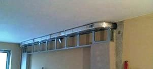
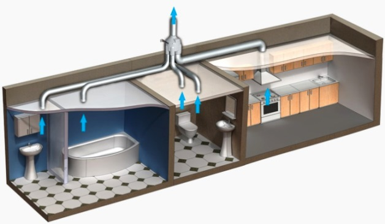

Качественный электромонтаж в Санкт-Петербурге и ленобласти, стаж 12 лет. Частный электрик, недорого и качественно.
Тел. 8 904 642 08 57 Николай.

Монтаж вентиляции в квартире под ключ от частного мастера.
Сегодня, монтаж вентиляции в СПБ можно заказать у частного мастера - то есть у меняя. Следует отметить, что учитывая важность вопроса, доверять выполнение работ дилетантам просто недопустимо, так как здесь нет мелочей и важна каждая деталь.
Актуальность вопроса по монтажу вентиляции.
В настоящее время, монтаж вентиляции под ключ в квартире или частном доме становится все более актуальной и это можно легко объяснить следующими факторами: Во-первых, в многоквартирных домах старой постройки к этому вопросу вообще практически не уделялось внимание, а вентиляция осуществлялась за счет имеющихся зазоров в оконных рамах и дверных проемах. Во-вторых, сейчас многие жильцы меняют старые окна и двери на новые - герметичные. В-третьих, большая часть вентиляционных отверстий, которые предусмотрены по проекту ходе проведения многочисленных ремонтов попросту заделывались. Все это препятствует свободному протеканию воздуха и самое главное - притоку свежего. Поэтому, производить монтаж вентиляции под ключ обязательно нужно с учетом всех этих факторов. К тому же обязательно нужно знать, что сочетание малой подвижности воздуха, высокой влажности и избыточно труда часто приводит к появлению плесени и росту болезнетворных грибков.

Что нужно знать при осуществлении монтажа вентиляции под ключ.
Большой опыт работ по монтажу вентиляции под ключ в помещениях различного назначения позволяет мне сделать ряд определенных выводов:
1) Естественная приточно-вытяжная вентиляция, которая предусмотрена в большинстве старых домов является не достаточно эффективной, а в некоторых случаях и опасной.
2) Для обеспечения нормального воздухообмена во всех помещениях требуется установка дополнительного оборудования.
3) Его выбор должен производиться с учетом следующих условий:
- Нормы воздухообмена.
- Площадь квартиры.
- Количество проживающих.
Действующими нормам предусмотрено, что она один метр квадратный общей площади должен быть обеспечен воздухообмен в объеме 3 м3.\час, а на одного человека - взрослого - 30 м3\час. Еще один важный момент при осуществлении монтажа вентиляции в квартире или частном доме под ключ - это подбор оборудования по принципу действия.
Виды оборудования для принудительной установки систем вентиляции.
Монтаж вентиляции под ключ можно осуществлять различными способами и с применением оборудования разными типами. Вентиляция в помещении бывает естественной и принудительной. В первом случае, она обеспечивается за счет тяги, которая возникает из-за разницы внутренних и внешних температур воздуха. Во втором случае - за счет тяги, которая производится механическим способом. Разделяют принудительную вентиляцию на: вытяжную, приточную и приточно-вытяжную. Монтаж каждого вида вентиляции имеет свои особенности и нюансы.
Почему данную работу стоит доверить мне.
Я осуществляю оценку работ только при личном осмотре помещения. Это обусловлено тем, что без визуального осмотра, просто невозможно дать оценку всем проводимым работам. Но самое главное - это то, что абсолютно каждый может убедиться, что сотрудничество со мной отличается особой доступностью и высочайшим качеством абсолютно всех. Но одно из моих приоритетных направлений - это установка вентиляционных квартирах - причем абсолютно любого типа. Доверившись мне, ваша квартира станет намного лучше и все гарантировано будет работать.
В данной сфере деятельности я работаю уже достаточно длительное время и готов оказать самые разнообразные услуги в плане ремонта и строительных работ. При этом я очень ответственно отношусь ко всем заказам очень ответственно, поскольку я ценю свое время и время заказчиков. При всем этом, следует обратить свое внимание на то, что сегодня, вызов одного высококвалифицированного намного выгоднее и удобнее, чем вызов целой бригады работников, которые не всегда опытные и при этом не всегда аккуратные.
Доверившись мне, вы можете быть абсолютно уверены в том, что получите наиболее качественную установку вентиляционной системе.
Причем работа будет совершенной - без каких-либо определенных недочетов и недоработок. Я готов взяться за любые объемы работ, но при этом, я гарантирую, что выполню работу точно в оговоренные сроки и при этом максимально качество. Я уже достаточно длительное время занимаюсь предоставлением данных услуг и имею большой опыт в проведении подобных работ, но самое главное - это то, что за свои услуги я беру достаточно низкую стоимость, поскольку мне намного важнее, чтобы каждый был доволен работой и при этом всегда, люди обращались именно ко мне.
 Поменять проводку в квартире.
Поменять проводку в квартире. Сколько будут стоить материалы.
Электрика в загородном доме стоимость работ.

Замена электропроводки в панельном доме.
Расценки на электропроводку квартир.
Замена проводки в хрущевке.
Электромонтаж в частном доме.
Электрика в загородном доме.
Сколько стоит замена электропроводки в двухкомнатной квартире?.
Электрик в новостройку однокомнатная квартира недорого.

Сколько стоит поменять электропроводку в 3-х комнатной квартире.